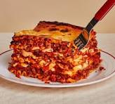

A LASAGNA
g
A classic lasagna recipe features layers of wide pasta noodles, rich meat sauce, creamy ricotta cheese, and gooey melted mozzarella. Start by preparing the meat sauce with ground beef, onions, garlic, and tomatoes, seasoned with Italian herbs. In another bowl, mix ricotta with egg, Parmesan, and fresh parsley. Layer cooked lasagna noodles in a baking dish, followed by meat sauce, ricotta mixture, and mozzarella. Repeat the layers and finish with a top layer of cheese. Bake in the oven until bubbly and golden brown. Let it rest before slicing and serving for a delicious, hearty meal.
ingredients
- Ground beef – 1 lb
- Onion – 1, finely chopped
- Garlic cloves – 2, minced
- Tomato sauce – 2 cups
- Tomato paste – 6 oz
- Crushed tomatoes – 1 can (14.5 oz)
- Italian seasoning – 1 tbsp (or a mix of basil, oregano, thyme)
- Salt and pepper – to taste
- Sugar (optional) – 1 tsp (to balance acidity)
- Ricotta cheese – 1 ½ cups
- Egg – 1, beaten
- Parmesan cheese – ½ cup, grated
- Fresh parsley – 2 tbsp, chopped (optional)
- Lasagna noodles – 12-15 (regular or oven-ready)
- Mozzarella cheese – 2 cups, shredded
- Parmesan cheese – ½ cup, grated (for topping)
preparation
Prepare the Meat Sauce:
- Brown the ground beef: In a large skillet or pot over medium heat, cook 1 lb of ground beef until browned, breaking it up into small crumbles. Drain excess fat if needed.
- Add onions and garlic: Stir in 1 finely chopped onion and 2 minced garlic cloves, and cook until softened, about 3 minutes.
- Make the sauce: Add 2 cups of tomato sauce, 6 oz of tomato paste, 1 can (14.5 oz) of crushed tomatoes, and 1 tablespoon of Italian seasoning. Season with salt, pepper, and 1 tsp of sugar (optional). Simmer on low heat for 20-30 minutes to let the flavors meld.
Cook the Lasagna Noodles:
- In a large pot, bring salted water to a boil and cook the lasagna noodles (12-15) according to package directions. Drain and lay them flat on a baking sheet, separating with parchment paper to prevent sticking.
- If using oven-ready noodles, skip this step.
Prepare the Cheese Mixture:
- In a medium bowl, combine 1 ½ cups of ricotta cheese, 1 beaten egg, ½ cup of grated Parmesan, and 2 tablespoons of chopped fresh parsley (optional). Mix until smooth.
Assemble the Lasagna:
- Preheat the oven to 375°F (190°C).
- In a large baking dish (9x13 inches), spread a thin layer of the meat sauce on the bottom.
- First layer: Place a layer of cooked lasagna noodles over the sauce
- Second layer: Spread ⅓ of the ricotta mixture evenly over the noodles.
- Third layer: Top with ⅓ of the meat sauce and sprinkle with shredded mozzarella
- Repeat these layers (noodles, ricotta, meat sauce, mozzarella) two more times.
- Top layer: Finish with a final layer of noodles, the remaining meat sauce, and a generous layer of mozzarella and Parmesan on top
Bake the Lasagna:
- Cover the baking dish with aluminum foil (to prevent over-browning) and bake in the preheated oven for 25-30 minutes.
- Remove the foil and bake for an additional 10-15 minutes, or until the cheese is bubbly and golden brown.
-
Rest and Serve:
- Let the lasagna rest for 10-15 minutes after removing it from the oven to allow the layers to set.
- Slice and serve hot, paired with garlic bread or a side salad